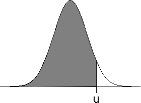
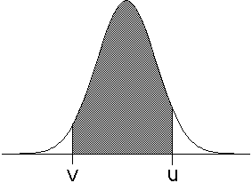

| The normal probability density is the familiar bell-shaped
curve; areas under the curve represent the likelihood that repeated measurements of
CERTAIN TYPES of processes will take on values in a particular range. |
| The failure to recognize that not every process is
well-described by a normal density is one of the most common errors in studying natural
and social phenomena. |
| The probability Prob(-infinity < Y < u) that an event Y takes on
values less than u is given by the area
under the curve to the left of u. This function Prob(-infinity < Y < u) is
called the normal probability distribution. |
| Related to this is the probability, Prob(v < Y < u), that repeated
measurements of a process Y will take on values between v and u. This is
given by the area under the curve between v and u, and can be viewed as the difference |
| Prob(v < Y < u) = Prob(-∞ < Y < u) - Prob(-∞ < Y < v) |
| Below are graphs of a normal density, with shaded areas indicating the normal
distribution. Click
here
for a graph of the normal distribution function. |
|  |
|
 |
| Prob(-∞ < Y < u) | |
Prob(v < Y < u) |
|
| The particular shape of the curve is determined by two parameters: |
| the mean, μ, or average value, and |
| the standard deviation, σ, a measure of how widely the measurements
spread around the mean. |
| With these parameters, and recalling the area under a curve is given by an integtal, we can write the
formula for
the probability distribution
Prob(-∞ < Y < u). |
| How, other than by seeing how closely the histogram matches the normal curve with the mean and standard deviation of the
data set, can we test if the data are normally distributed? An answer is provided by kurtosis. |